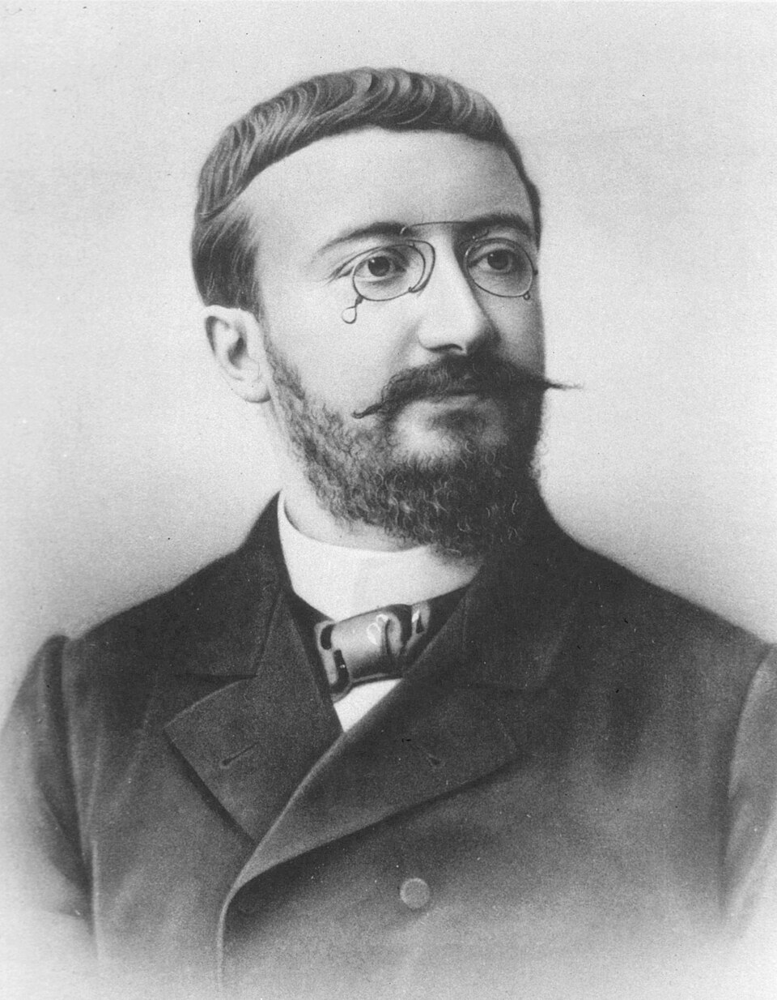

“We pass through this world but once. Few tragedies can be more extensive than the stunting of life, few injustices deeper than the denial of an opportunity to strive or even to hope, by a limit imposed from without, but falsely identified as lying within.”Stephen Jay Gould, The Mismeasure of Man (1981)
Christopher Langan, born in 1952 in Bozeman, Montana, grew up in poverty with an alcoholic stepfather. He learned to read by three, was identified as gifted in elementary school, scored, by his own account and by published reports, an IQ somewhere in the upper 190s on standard adult tests — placing him on the extreme right tail of the distribution, somewhere on the order of one in ten million. He attended Reed College for two semesters before dropping out for financial reasons, then Montana State for a similar period. For most of his adult life he worked as a bouncer at a Long Island bar. He has, in his spare time, written what he calls the “Cognitive-Theoretic Model of the Universe,” a self-published metaphysical system that has not been engaged with by the philosophical or scientific establishment. He has been called, by journalists, “the smartest man in America.” His life has been, by his own description, mostly disappointing.1
We open with Langan because his case poses, more sharply than any laboratory finding could, the central question of this chapter. By the most common measure we have for intelligence, Langan is exceptional in a way that should, if intelligence were what we usually mean by it, have set him apart for an extraordinary life. By any honest measure of how his life has actually gone — the work he has been able to do, the influence he has had, the relationships he has built, the contribution he has made — he is, on the long view, an ordinary American with a difficult biography. The number is real. The number predicts almost none of what the word intelligence ought, in the deeper sense, to predict.
This chapter is about that gap. We will look, carefully, at what intelligence tests do measure, at what they fail to measure, and at the long, sometimes ugly history of taking the number for the person. By the end you will see why the modern professional view of IQ is much narrower than either its defenders or its critics often allow: it is a real, modestly predictive, partly heritable measurement of a specific kind of cognitive ability, not a measurement of intelligence in any larger sense the word might mean, and not a verdict on the human worth of the person who took the test. The honest position, between the two errors of dismissing the science and over-believing it, is the position this chapter exists to defend.
The number is real. The number predicts almost none of what the word intelligence ought, in the deeper sense, to predict.
The Founding IntentionWhat Alfred Binet Actually Wanted

The modern intelligence test begins, properly, in 1905, in Paris, with a quiet French psychologist named Alfred Binet and his collaborator Théodore Simon. The French Ministry of Public Instruction had asked them a specific, practical question: how could the new state schools identify children who would not, without extra help, be able to follow the standard curriculum? The need was not philosophical. It was administrative. The Ministry wanted a way to find the children who needed assistance, so they could be given it.2
Binet and Simon’s response was, by the standards of the time, brilliantly pragmatic. They assembled a battery of tasks of graded difficulty — following instructions, naming objects, defining words, counting coins, drawing from memory, completing sentences — and observed, on large samples of normal French schoolchildren, what proportion of children at each age could perform each task. From the results they derived a mental age: a child who could perform the tasks of an average eight-year-old was said to have a mental age of eight, regardless of chronological age. The 1908 version of the scale, refined and standardised, became the founding instrument of modern psychometrics.
What Binet himself thought of the scale he had invented is worth dwelling on, because it has been so consistently ignored by those who later used it for purposes he opposed. Binet wrote, in the years before his early death in 1911, that the scale measured a particular and limited thing — the present school-related cognitive performance of a French child — and that this measurement said nothing about the child’s ultimate capacity. He believed intelligence was modifiable; the very point of identifying struggling children, on his view, was to give them the targeted attention by which their intelligence would grow. He explicitly rejected the idea that the scale gave a measure of innate ability, and he warned against the “brutal pessimism” of treating a child’s score as a verdict on their future. The score was supposed to point the way to teaching, not to closure.3
Almost everything in the subsequent history of intelligence testing happened against Binet’s warning. By the time he died, the test had crossed the Atlantic. It would there be turned into something he had explicitly refused to make it. The chapter that follows is, in considerable part, the story of how a careful French diagnostic instrument became, in the hands of its American adapters, something the man who built it never authorised.
The American AdaptationTerman, Yerkes, and the Manufacture of IQ
The American adaptation of Binet’s test was the work of Lewis Madison Terman, a psychologist at Stanford University whose 1916 revision — published as the Stanford-Binet Intelligence Scale — gave the test the form that, with successive revisions, it still has today. Terman’s technical contribution was real: he established American age norms, refined the tasks, and introduced the formula by which mental age divided by chronological age, multiplied by one hundred, would yield the intelligence quotient — the IQ. The formula was William Stern’s; the operationalisation as a standardised population measure was Terman’s. The Stanford-Binet became, almost overnight, the dominant intelligence test in the English-speaking world.4
Terman’s framing, however, was the opposite of Binet’s. He believed, and wrote, that intelligence was largely innate, fixed, and unequally distributed across populations; that intellectual capacity was the most important determinant of social value; and that the test he had built measured something stable enough to predict, from childhood, a person’s eventual standing in life. From these convictions flowed the most ambitious longitudinal study of his career: the Stanford Genetic Studies of Genius, begun in 1921, which recruited 1,528 California children with IQs above 135 and followed them for the rest of their lives, well past Terman’s own death. The results, when they came in over the following decades, were not what Terman had predicted. His “Termites,” as the cohort came to be called, did, on average, modestly well in life, but they produced no Nobel laureates and very few outstanding figures in any field; two children Terman had screened and rejected as not gifted enough for the study, William Shockley and Luis Alvarez, both later won Nobel Prizes in physics. The careful retrospective conclusion has been that, above a basic threshold of cognitive ability, the determinants of exceptional achievement are mostly not IQ.5
The more consequential American adaptation, however, was not Terman’s study. It was the work of Robert Yerkes, then president of the American Psychological Association, who in 1917 convinced the United States Army to administer mass intelligence testing to the entire 1.7 million-strong wartime conscript force. Yerkes and his team designed the Army Alpha (for literate English-speaking recruits) and the Army Beta (for the illiterate or non-English-speaking), and over the next two years they tested almost every man drafted into the American army. The tests were administered hurriedly, in adverse conditions, by examiners often poorly trained; the questions on Army Alpha included items requiring familiarity with American baseball, recent advertising slogans, and cultural references obviously unavailable to recent immigrants. The results, when published, showed exactly what Yerkes had expected: native-born Americans of northern-European descent scored highest; recent immigrants from southern and eastern Europe scored lower; African-Americans scored lowest. Yerkes interpreted these scores as evidence of innate differences in racial intelligence.6
The results were used, in the years immediately following, to argue for the Immigration Restriction Act of 1924, which severely limited immigration from southern and eastern Europe and effectively closed American doors to Jewish refugees fleeing the gathering catastrophe of European antisemitism. Carl Brigham, a Princeton psychologist whose 1923 book A Study of American Intelligence reanalysed the Army data, would in 1930 publicly recant his interpretation and acknowledge the role of cultural and linguistic factors. The recantation came too late. Many of the people the 1924 Act kept out would die in the camps of the 1940s. The American intelligence-testing community’s contribution to this history is real, and the careful modern historian does not soften it.7
This is the longer answer to the question of what IQ testing is. It is, on one accounting, a useful technical tool refined over a century of work. It is, on another and inseparable accounting, an instrument that has been used, in living memory, to justify the closing of borders to people who would otherwise have lived. Both are true. The conscientious user of the modern test must know both.
The Defensible ScienceWhat IQ Tests Actually Measure
Set aside, for a moment, the worst applications of the test, and ask what the careful modern psychometric science actually shows. The answer, on a scrupulous reading, is real, modest, and worth saying clearly.
The first finding is the existence of what Charles Spearman, in 1904, called the g factor or general intelligence. Spearman noticed that performance on apparently dissimilar mental tasks — vocabulary, spatial reasoning, arithmetic, pattern recognition, memory span — tended to be statistically correlated within individuals. A person who did well at one tended, more often than chance, to do well at the others. From this correlation Spearman extracted, by factor analysis, a single underlying factor that he proposed represented a general cognitive ability, on which specific abilities were partly constructed. g has, with refinements, survived a hundred and twenty years of investigation; some version of it appears in essentially every modern psychometric model of intelligence. It is the best-established positive finding in the field.8
The second finding is that IQ scores, taken seriously as measures of g, are modestly to substantially heritable. Twin and adoption studies across multiple populations have given heritability estimates in the range of 0.5 to 0.8 in adulthood — meaning that roughly half to four-fifths of the variance in IQ scores within a population, at adult ages, is associated with genetic variation. Two cautions matter here, and they are routinely lost in the popular debate. First, heritability is a population statistic, not an individual one; it does not tell you what fraction of your IQ came from your genes, only what fraction of the variance in a population is associated with genetic variance within the conditions of that population. Second, heritability is environment-dependent; the same trait can have very different heritabilities in environments that vary substantially in opportunity. Stop the variation in environment and all remaining variance is genetic by definition; allow huge variation in environment and the heritability estimate falls.9
The third finding, and the one most uncomfortable for any simple hereditarian view, is the Flynn effect. Across the twentieth century, average IQ scores in industrialised countries rose at a rate of roughly three points per decade. The cumulative effect is that an average performer in 1920, by the norms used today, would score somewhere in the high 70s on a modern test. James R. Flynn, who documented the effect across many countries from the 1980s, considered its size and consistency proof that the phenotype IQ tests measure cannot be the fixed innate trait the hereditarians had imagined. Something about modern environments — better nutrition, more schooling, more familiarity with abstract reasoning, the everyday cognitive load of urban industrial life — produces children whose performance on intelligence tests is substantially better than their grandparents’. The gain is real; it is too large and too rapid to be genetic; and it complicates, decisively, the older view of IQ as a measure of fixed innate ability.10
Putting these together, the defensible modern view is this. IQ tests measure a real cognitive ability, partly heritable and partly environmental, that predicts school performance robustly, some job performance moderately, and some health and longevity outcomes weakly. The ability is real. The measurement is decent. The predictive use of IQ inside the range it was validated on (school performance for children, certain training outcomes for adults) is honest applied psychometrics. The predictive use of IQ as a verdict on human worth or as a measurement of intelligence in the larger sense the word has historically borne is none of these things. It is a category error that, repeated for a century, has done unusual amounts of harm.
What the Number MissesWisdom, Practical Sense, Creativity, Character
Return to Langan, our opening case. What does the number not capture about him that, more honestly, his life captures? The list is long, and it is the deeper subject of this chapter.
The first missing thing is practical intelligence — what Robert Sternberg has called the ability to read and act on the specific real-world situation, the workplace, the neighbourhood, the family. Sternberg’s work over four decades has shown, across many populations, that practical intelligence correlates only weakly with academic IQ, that it can be measured in a methodologically defensible way, and that it predicts real-world outcomes (job success, leadership, the navigation of ordinary life) at least as well as standard tests. Sternberg called for a “triarchic” conception of intelligence — analytical, practical, and creative — that the popular debate has not really absorbed. The careful experimental work, however, supports a version of his case.11
The second is creative intelligence — the ability to produce work that is both genuinely novel and useful. Mihaly Csikszentmihalyi’s long study of high-creative people (artists, scientists, writers, designers) found that, above a modest IQ threshold of around 120, further IQ added almost nothing to predicted creative output; the determinants of high creative achievement were domain mastery, the right social-institutional setting, the right personality (openness, persistence, tolerance for ambiguity), and the lived experience of flow. The creative geniuses Terman missed and the Nobel laureates he rejected reappear in this literature; their distinguishing features were not IQ.12
The third is emotional intelligence — the cluster of abilities to recognise, name, and manage one’s own emotions and to read and respond to those of others. The construct is younger and more contested than the others; the popular framing (Daniel Goleman) has run ahead of the empirical research. The careful version (Peter Salovey, John Mayer) has shown that emotional perception and management can be measured with reasonable reliability, that the abilities correlate only modestly with IQ, and that they predict aspects of leadership and relationship outcomes that IQ does not. The strongest versions of the popular claims about emotional intelligence are not supported. The minimal version — that there are real cognitive abilities concerned with the social world that the IQ test does not measure — is well supported.13
The fourth is wisdom — what the ancient world called phronesis or practical wisdom, and what the modern psychology of wisdom (Paul Baltes’s Berlin Wisdom Project, Sternberg’s work on wise reasoning) has shown to be a measurable construct partly orthogonal to IQ. Wise reasoning involves the recognition of the limits of one’s own knowledge, the consideration of multiple perspectives, the integration of long-term consequences, and a tolerance for ambiguity. It tends to develop, on the available evidence, with age and difficult experience, rather than to peak in early adulthood with raw cognitive speed. It is the part of the answer to the question of why Langan’s number has not made him wise.14
The fifth is character — the long sediment of habits, virtues, and stable orientations we treated in the previous chapter. The Aristotelian intuition that what makes a life go well is, in the end, the kind of person one has become — courageous, just, generous, temperate, honest — turns out, on every careful long-term study, to be at least as well-supported as the intelligence literature. The Stanford Marshmallow follow-ups, the long Grant Study of Harvard graduates (running since 1938), the more recent Dunedin cohort studies in New Zealand — they tell a consistent story. Character predicts life outcomes more strongly, in many cases, than IQ does. Aristotle’s second nature is not absent from the modern science; it is just measured differently, under different names, and rarely reported in the same articles as the IQ debate.15
Add up all five of these. Practical intelligence; creative intelligence; emotional intelligence; wisdom; character. The standard IQ test measures, by the careful estimate of the field, almost none of them. It measures what it measures very well within its range. It does not measure the rest of what we ought to mean by cleverness — or, in the older and richer word, by intelligence at all.
The Objection That Matters“But the IQ Data Predicts Real Things”
This is the strongest objection an honest reader will raise. You have spent the chapter arguing that IQ does not measure intelligence in the rich sense. But the data is the data: IQ does predict school performance, job performance in cognitively demanding fields, and a number of life outcomes. The careful modern reviews (Hunt 2011, Deary 2012) are not crank papers; they are sober, peer-reviewed syntheses of decades of research. Why are you so reluctant to take the data at face value?
The honest answer is in three parts.
The first is that we do take the data seriously. The careful position is not that IQ measures nothing or predicts nothing; that would be inaccurate and we would not say it. The careful position is that IQ measures one real and specific thing, predicts the outcomes that thing actually drives, and stops there. Within its proper domain, IQ research is legitimate science. It is the extension beyond that domain — to a verdict on a person’s worth, to a measure of any larger faculty called intelligence, to a basis for ranking populations — that does not survive careful examination.
The second is that the predictive validity of IQ is real but smaller than the popular debate often assumes. The standard correlation between IQ and academic achievement is around 0.5; between IQ and job performance in cognitively demanding fields it is around 0.3 to 0.5; between IQ and life satisfaction it is small and inconsistent. A correlation of 0.5 means IQ predicts about 25% of the variance in school outcomes — substantial, important, real, but leaving three-quarters of the variance to be predicted by everything else: motivation, opportunity, family background, character, luck. The IQ-believer who treats the score as the dominant predictor of a life is misreading the strength of the very correlations they cite.16
The third is that the history of how IQ has been used matters to how it should be used. The 1924 immigration restrictions, the forced-sterilisation laws upheld in Buck v. Bell (1927), the tracking systems that have, in every country that has implemented them, disproportionately consigned children of poorer families to lower educational tracks — these are not aberrations of the science; they are predictable consequences of treating the score as a verdict. A reader who proposes to use IQ for any of the broader purposes the previous century used it for has the obligation to look at what happened the last time. The science can be defended within its domain. The applications outside that domain have, on the historical record, been catastrophic with depressing regularity.
The careful position is that IQ measures one real and specific thing, predicts the outcomes that thing actually drives, and stops there. The harm has come, every time, from going beyond it.
The Hardest HistoryIQ, Eugenics, and Buck v. Bell
The conscientious chapter on intelligence cannot end without naming the worst of what came of treating the score as a verdict. The American eugenics movement of the 1910s, 20s, and 30s drew, for its scientific authority, on the intelligence-testing community of Terman, Yerkes, Brigham, and the larger psychometric establishment. The American Eugenics Society’s “Fitter Families” competitions toured state fairs; the Carnegie Institution funded the Eugenics Record Office at Cold Spring Harbor under Charles Davenport; thirty-three U.S. states passed compulsory-sterilisation laws between 1907 and 1937. By the time the wave subsided, between sixty and seventy thousand American citizens had been forcibly sterilised, the great majority of them poor, disabled, or institutionalised women, on grounds that their genetic material should not be allowed to propagate.17
The legal endorsement came in 1927, in Buck v. Bell, the U.S. Supreme Court’s 8-1 decision upholding Virginia’s compulsory-sterilisation statute. The Court, in an opinion by Oliver Wendell Holmes Jr., wrote the line that has not lost its ability to stop a reader: “Three generations of imbeciles are enough.” The plaintiff, Carrie Buck, was an eighteen-year-old woman who had been raped by a nephew of her foster mother and, when she became pregnant, was committed to the Virginia State Colony for Epileptics and Feebleminded as “feebleminded.” She was, on subsequent investigation, of ordinary intelligence; her daughter, Vivian, before her early death at age eight, was on her teacher’s reports an average pupil. Buck v. Bell has never been formally overruled. It remains, on the United States Reports, the law of the land.18
The American eugenicists were cited approvingly in Mein Kampf. The Nazi sterilisation programme of 1933 was modelled directly on Californian and Virginian statutes; the architects of the German law studied the American implementations. The American intelligence-testing community of the 1910s and 20s did not, of course, intend the gas chambers of the 1940s. They did not need to. They built a framework in which a number on a paper test could be used to classify human beings as fit or unfit to reproduce, and the framework was used.
This is the deepest reason the conscientious modern psychometrician is so careful. The science can be used well or badly; the history of its bad use is severe; and the contemporary practitioner has the duty to know the history before deploying the instrument. To treat IQ as just a number, abstracted from the century that produced it, is itself a kind of intellectual irresponsibility. The number means what it means. The history means what it means. Both must, by any honest researcher, be carried at once.
“What does the IQ number actually mean?”
A hundred and twenty years after Binet, six careful answers.
“A reliable, partly heritable measure of a specific cognitive ability that correlates around 0.5 with school performance and predicts a meaningful share of certain training outcomes. Inside its domain, it is one of the best-validated instruments in psychology. Outside its domain, it is none of the things it has been used to be.”
“Binet built a tool for finding children who needed help. Terman turned it into a verdict on innate worth. Yerkes used it to test the army. The 1924 Immigration Act used the army data. The Nazi sterilisation law used the American statutes. The instrument has been many things; pretending it is just a number is to ignore the part of its life that has done the damage.”
“Used properly, IQ testing identifies children who would otherwise struggle invisibly and helps direct resources to them — Binet’s original use, now considered good educational practice. Used improperly, as the basis of a tracking system, it consigns the children of poorer families to worse schools. The same instrument; the difference is the policy in which it is embedded.”
“In thirty years I have never met a patient whose problems were primarily their IQ. I have met many whose problems were how their parents or schools or society treated them on the basis of their IQ. The clinical relevance of the score is much smaller than its social weight.”
“Even granting the score is real and predicts what it predicts, we should be suspicious of any account of human worth that reduces it to any single number. The richer concept of intelligence in the tradition — Aristotle’s phronesis, the medieval prudentia, the modern wisdom literature — will not collapse to the score, and it should not be expected to.”
“You are not your IQ. You are the long composite of how you have used what you had — the courage you have brought to difficulty, the kindness you have extended to people who were difficult to be kind to, the work you have done that did not have your name on it, the care you have given to the people you love. None of that is on the test. All of it is what the word intelligence was, in its older sense, trying to point at.”
Myth vs. RealitySetting the Record Straight
What Is Often Said (on either side)
From defenders: “IQ is a fixed, innate, single-number measure of intelligence that strongly predicts a person’s success in life; the science is settled and the politically uncomfortable findings should not be suppressed.”
From sceptics: “IQ tests measure nothing real; the construct is culturally biased and scientifically empty; the whole enterprise should be abandoned.”
What the Evidence Shows
IQ tests measure a real cognitive ability (g) that is partly heritable, partly environmental, and modifiable; the Flynn effect of ~3 points per decade across the 20th century rules out simple fixed-trait theories. IQ correlates around 0.5 with school performance — substantial, not dominant. It predicts very little of what we usually call wisdom, creativity, emotional intelligence, practical sense, or character, each of which is measurable and at least as important. The dismissive sceptic and the triumphalist defender are both overstating; the honest position is in between, narrower than either, and well-documented.
The careful contemporary debate about IQ is not whether the construct is real (it is) or whether it predicts some things (it does); it is about how to interpret group differences, what fraction of heritability is “additive” vs interactive with environment, how to think about the gene-environment correlations the recent polygenic-score work is starting to map, and which uses of the test are ethically defensible. These are genuinely live questions on which reasonable researchers disagree. The political weaponisation of the IQ literature in some popular writing of the last decade has run far ahead of what the science supports in either direction, and the careful reader is right to be suspicious of any source — on either side — that treats the questions as closed.
The lines worth carrying out of this chapter.
- The IQ score is real and predicts what it predicts. Around 0.5 correlation with school performance; meaningful prediction of some training outcomes; substantial but partial heritability. The measurement is legitimate science within its range.
- The score is not intelligence in any larger sense. Practical intelligence, creative intelligence, emotional intelligence, wisdom, and character — the things the older word actually pointed at — are measurable, important, and largely orthogonal to IQ above a modest threshold.
- The Flynn effect rules out fixed-trait theories. Average IQ rose three points per decade across the twentieth century — too large, too fast, to be genetic. Whatever IQ measures, it is shaped substantially by environment.
- The history of using the score as a verdict has been catastrophic. The 1924 Immigration Act, Buck v. Bell, 60–70,000 forced sterilisations, and the German law modelled on the American statutes are the historical record the conscientious modern psychometrician has to know.
- Binet was right; almost everyone who took over his instrument was wrong. The score is a way to find children who need help. It is not a measure of innate worth, a verdict on a future, or a basis for ranking human beings. The careful use of the test honours its founder’s warning.
If you keep one sentence: cleverness is not a number, and the long human attempt to make it one has hurt more people than it has helped — though, used carefully and humbly, the test that produced the number still has its honest small place.
Research ReferencesSources & Notes
- ReferenceOn Christopher Langan: Malcolm Gladwell, Outliers (2008), Chapter 4. The IQ figure is from public reports and Langan’s own statements; the score itself, like all extreme-tail IQs, is at the edge of what current tests can reliably resolve.
- HistoryBinet, A. & Simon, T., “Méthodes nouvelles pour le diagnostic du niveau intellectuel des anormaux,” L’Année psychologique (1905); Wolf, T. H., Alfred Binet (Chicago, 1973), is the standard English-language biography.
- ReferenceBinet, A., Les idées modernes sur les enfants (1909); the “brutal pessimism” passages are discussed in Gould, S. J., The Mismeasure of Man (rev. ed. 1996), pp. 181–188.
- HistoryTerman, L. M., The Measurement of Intelligence: An Explanation of and a Complete Guide for the Use of the Stanford Revision and Extension of the Binet-Simon Intelligence Scale (1916).
- ReferenceThe Stanford Genetic Studies of Genius: Terman, L. M. & Oden, M. H., Genetic Studies of Genius, Vols 1–5 (1925–1959); Shurkin, J. N., Terman’s Kids (1992); the Shockley and Alvarez story is in Park, S. K. & Steelman, L. C., on the cohort follow-up.
- HistoryYerkes, R. M., Psychological Examining in the United States Army (Memoirs of the National Academy of Sciences, 1921); critical analysis in Gould (1996) and in Carson, J., The Measure of Merit (2007).
- HistoryBrigham, C. C., A Study of American Intelligence (1923); his 1930 recantation appeared in Psychological Review. On the Immigration Restriction Act of 1924: Kevles, D. J., In the Name of Eugenics (1985); Okrent, D., The Guarded Gate (2019).
- ScienceSpearman, C., “‘General intelligence,’ objectively determined and measured,” American Journal of Psychology (1904); modern treatment in Carroll, J. B., Human Cognitive Abilities (1993).
- DebatedPlomin, R. et al., on twin and adoption studies of IQ; Turkheimer, E. on heritability and socioeconomic status (the careful caveat that high-SES populations show higher heritability than low-SES populations); see Turkheimer, E. et al., Psychological Science (2003).
- ScienceFlynn, J. R., “Massive IQ gains in 14 nations: What IQ tests really measure,” Psychological Bulletin (1987); Flynn, J. R., Are We Getting Smarter? (2012); Pietschnig, J. & Voracek, M., on Flynn-effect reversal in some recent cohorts.
- DebatedSternberg, R. J., Beyond IQ: A Triarchic Theory of Human Intelligence (1985); subsequent papers on practical intelligence and Yale studies on tacit-knowledge measures.
- ReferenceCsikszentmihalyi, M., Creativity: Flow and the Psychology of Discovery and Invention (1996); Simonton, D. K., on the IQ-creativity relationship above threshold.
- DebatedSalovey, P. & Mayer, J. D., “Emotional intelligence,” Imagination, Cognition, and Personality (1990); Goleman, D., Emotional Intelligence (1995) is the popular synthesis — some of whose stronger claims have not held up.
- ReferenceBaltes, P. B. & Staudinger, U. M., on the Berlin Wisdom Paradigm; Grossmann, I., on wise reasoning. The wisdom-literature is younger than the IQ literature but increasingly rigorous.
- ScienceMoffitt, T. E. et al., the Dunedin Multidisciplinary Health and Development Study, on character / self-control measures in childhood predicting adult outcomes; Vaillant, G., on the Harvard Grant Study; Lally, P. (cf. Ch 7) for the habit literature.
- ReferenceHunt, E., Human Intelligence (2011); Deary, I. J., Intelligence: A Very Short Introduction (2nd ed. 2020). The standard predictive-validity correlations are reviewed in detail in both.
- HistoryKevles, D. J., In the Name of Eugenics (1985); Lombardo, P. A., Three Generations, No Imbeciles: Eugenics, the Supreme Court, and Buck v. Bell (2008); Cohen, A., Imbeciles (2016).
- HistoryBuck v. Bell, 274 U.S. 200 (1927); Holmes’s majority opinion remains, formally, valid precedent.
Citations support the science and history presented; a production edition would carry full bibliographic detail and externally verified DOIs.
Going FurtherRecommended Books
Read
- Stephen Jay Gould, The Mismeasure of Man (rev. ed. 1996) — the still-standing critical history
- Ian J. Deary, Intelligence: A Very Short Introduction (2nd ed. 2020) — the careful defender’s case
- Daniel Okrent, The Guarded Gate (2019) — on the 1924 Immigration Act and the IQ science behind it
- Adam Cohen, Imbeciles (2016) — on Buck v. Bell
- James R. Flynn, Are We Getting Smarter? (2012)
Watch & Listen
- Howard Gardner’s lectures on multiple intelligences
- Talks by Robert Sternberg on practical intelligence
- Documentaries on the American eugenics movement and on the 1927 Buck v. Bell case